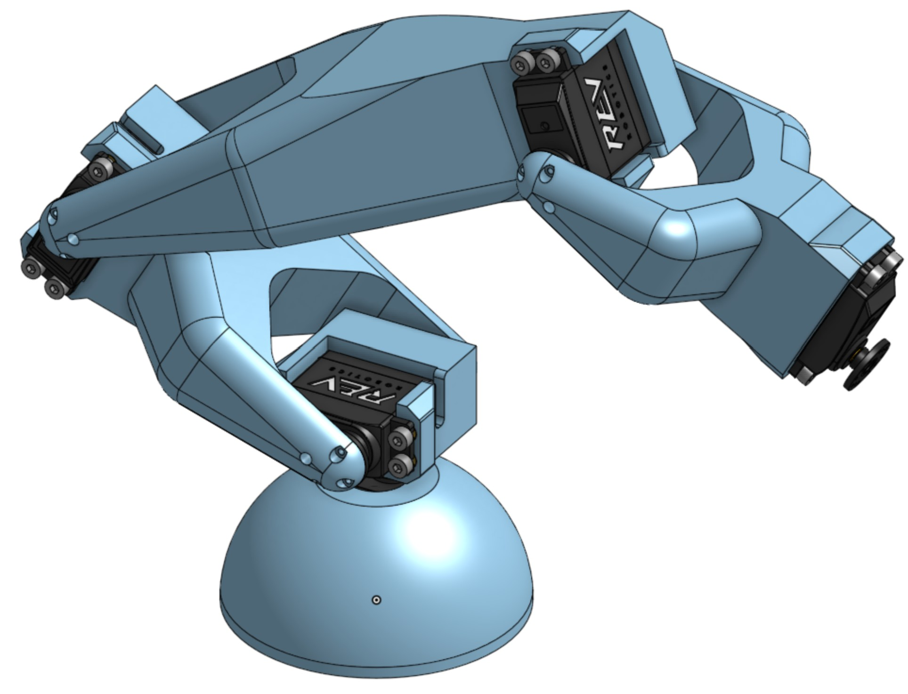

Where it stands
This one is honest about its status: I have started it and there is no physical prototype yet. What exists is the beginning of a CAD model for a fully 3D printed 5 DOF arm, designed around ease of assembly first, because a platform you dread rebuilding is a platform you stop using.
The point of it is practice. I want somewhere to write and break control and motion planning algorithms for serial arms, on hardware I own, using the foundation from my robotics and automation coursework rather than a simulator that never drops anything.
Planned technologies
- 3D printing for every structural component
- Servo actuation at the joints
- Raspberry Pi 5 as the controller
- Forward and inverse kinematics
- Control software still to be decided
Goals
Finished, it should work as both a learning platform and a usable tool: somewhere to implement motion planning, try different control approaches, and eventually bolt on computer vision for autonomous object manipulation. The modular design is there so future me can upgrade one joint without reprinting the whole arm.